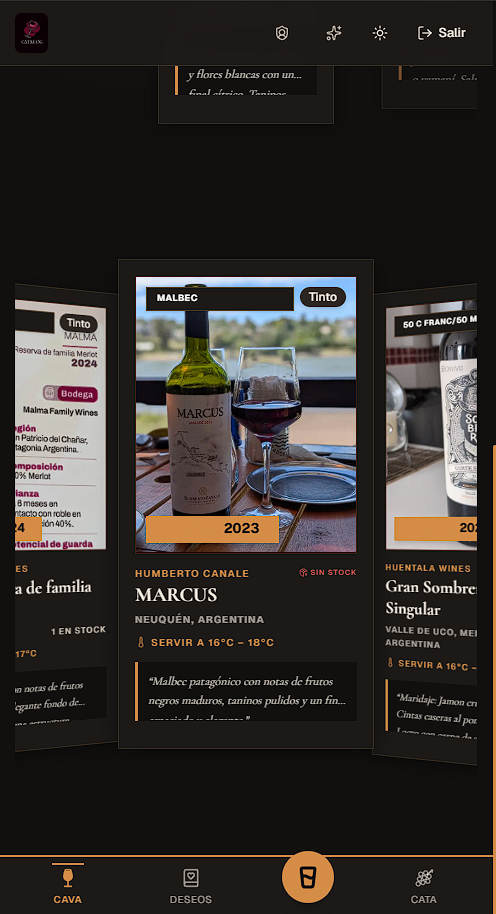
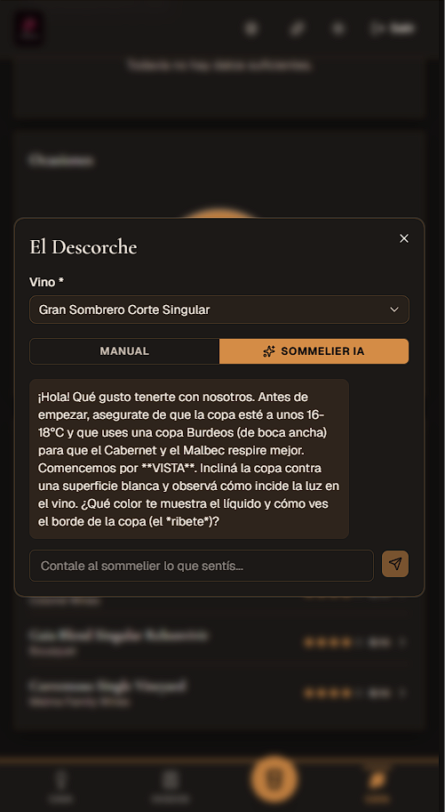
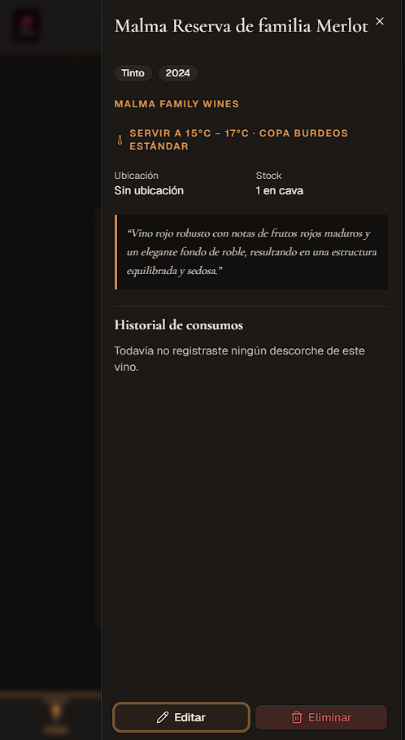
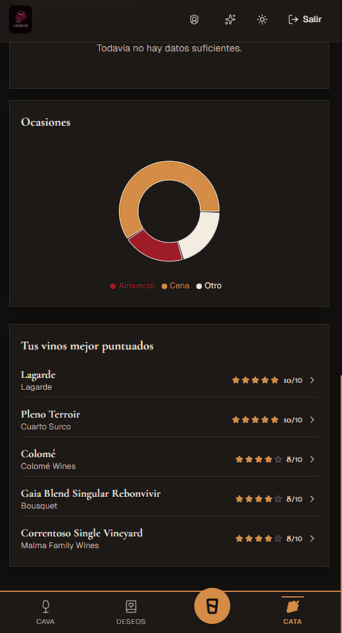

El pedido al distribuidor se decide mirando la góndola. No la demanda real de tus clientes.
Tus clientes ya guardan los vinos que quieren en su propia bitácora. Con CataLog, esa lista es la mejor pista que vas a tener de qué reponer antes de que te lo pidan.
Quiero enterarme cuando esté disponibleHoy el acceso para vinotecas está en construcción. Dejá tu email y te avisamos apenas se abra.
Ejemplo ilustrativo
Hoy lo llevás en la cabeza, en el remito del distribuidor y en lo que se te ocurre parado en la góndola.
Pedís por instinto, por lo que se vendió el mes pasado, o porque un cliente lo comentó al pasar y ya no te acordás bien qué era. Mientras tanto, esa misma persona ya anotó el vino exacto que quiere en su teléfono, en una lista que vos no ves, en una app que ni sabés que usa.
El problema no es que no conozcas a tus clientes. Es que su demanda real vive en un lugar que hoy no te contesta.
Tres cosas que hace por vos, no tres funciones en una lista.
Ya quieren llevar su propia bitácora. Vos solo aprovechás esa costumbre.
Escanean la etiqueta con el celular y CataLog completa bodega, cepa y añada solo, con la misma foto que ya le sacan a la botella antes de decidir si la compran, sin que vos tengas que empujar ningún formulario nuevo.
Lo que guardan en su lista de deseos es tu pedido de mañana.
Cada botella que un cliente marca como "quiero conseguir" queda asociada a tu vinoteca. Vos ves el ranking real de lo que se busca y todavía no tenés, antes de perder la venta por no tenerlo en la góndola.
Un resumen simple una vez al mes, no otra planilla para mantener.
La idea es que cada tanto te llegue lo esencial (cuántos clientes activaron el canal, qué buscan y no tenés) sin que vos tengas que ir a buscarlo. Todavía lo estamos armando; por eso este acceso anticipado.
La base ya existe y se usa todos los días
Sin mockups ni datos inventados: lo que ves abajo es la app real, cargada con vinos reales.




CataLog ya está en uso real todos los días, cargando cava propia. La versión para vinotecas (con QR de local, agregación de demanda e informe mensual) es la que estás por probar vos entre los primeros.
Antes de que preguntes
¿Mis clientes tienen que bajarse otra app aparte?
No aparte de CataLog: es la misma app donde ya cargan su cava personal. Escanean el QR de tu local una vez y quedan vinculados a tu vinoteca desde ahí.
¿Tengo que cargar mi catálogo a mano?
Sí, pero no arrancás de cero: tu vinoteca se crea con un catálogo de ejemplo precargado para que veas cómo se ve antes de reemplazarlo por el tuyo.
¿Cuánto cuesta?
Todavía no cobramos nada. Cuando se abra, arranca con un trial gratis de 15 días con autoservicio completo. Dejá tu email y sos de los primeros en probarlo.
¿Mis datos y los de mis clientes están seguros?
Se accede con Google o con usuario y contraseña propios, y el detalle completo de qué se guarda y para qué está en la Política de Privacidad real de CataLog.
¿Seguís pidiendo por instinto?
Dejá que la lista de deseos de tus propios clientes te lo diga.
¡Gracias! Te vamos a escribir apenas se abra el acceso para vinotecas.
¿Preferís algo más directo? Escribinos por mail.